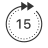

<link
  rel="stylesheet"
  href="https://cdnjs.cloudflare.com/ajax/libs/font-awesome/4.7.0/css/font-awesome.min.css"
/>

<ion-header #header id="header">
  <ion-toolbar>
    <ion-buttons slot="end">
      <button ion-button="" icon-only="" class="menu-button">
        <ion-icon
          name="ellipsis-vertical"
          class="menu-icon"
          (click)="showhidePopoverMenu()"
        ></ion-icon>
      </button>
    </ion-buttons>
    <div [class]="'landscape' + '-header'">
      <span class="bookTitle" (click)="openBookSelector()"
        >{{selectedBook}}</span
      >

      <span class="versionSelector" (click)="openSetBible()"
        >{{selectedVersion}}</span
      >
    </div>
  </ion-toolbar>
</ion-header>

<ion-content
  [class]="'theme' + selectedTheme"
  [scrollEvents]="true"
  (ionScroll)="handleScroll($event)"
>
  <!-- Search Result Return Button -->
  @if (authservice.isViewingSearchResult) {
  <div class="search-result-banner">
    <!-- <div class="search-ref">Viewing: {{authservice.searchResultReference}}</div> -->
    <div class="search-ref">Search Result</div>
    <button class="back-to-reading-btn" (click)="returnToReading()">
      <ion-icon name="arrow-back"></ion-icon> Read Page
    </button>
  </div>
  }

  
  
  <div
    class="book-title-on-maximize"
    [ngStyle]="{'display': maximize_screen=='1' && authservice.readMode=='VERSE' && orientation=='landscape'  ? 'inline-block' : 'none'}"
  >
    <span class="bookTitle" (click)="openBookSelector()">{{selectedBook}}</span>

    <span class="versionSelector" (click)="openSetBible()"
      >{{selectedVersion}}</span
    >
  </div>

  <div
    class="{{'left-nav-chapter'  + ' ' + showBottomNav + ' ' +  showPrevNav}}"
    (click)="gotoPrevVers()"
    [ngStyle]="{'display': authservice.readMode.toUpperCase()!='VERSE' ? 'inline-block' : 'none'}"
  >
    
  </div>

  <div
    [ngStyle]="{'display': authservice.readMode=='VERSE' &&  orientation=='portrait' ? 'inline-block' : 'none'}"
  >
    <div
      class="{{'left-nav-verse-portrait'+ ' ' + showBottomNav + ' '  }}"
      [ngStyle]="{'display': maximize_screen=='0' ? 'inline-block' : 'none'}"
    >
      
    </div>
    <div class="{{'verse_audio_'+ ' ' + showBottomNav + ' '  }}">
      <div class="enabled loadfullchapter" (click)="loadChapter()">
        Full Chapter
      </div>
    </div>
    <div
      class="{{'right-nav-verse-portrait'+ ' ' + showBottomNav + ' '  }}"
      [ngStyle]="{'display': maximize_screen=='0' ? 'inline-block' : 'none'}"
    >
      
    </div>
  </div>

  <div class="{{'verse_audio_skip_left'+ ' ' + showBottomNav + ' '  }}">
    <!--  -->
  </div>
  <div class="{{'verse_audio_'+ ' ' + showBottomNav + ' '  }}">
    
    
  </div>
  <div class="{{'verse_audio_skip_right'+ ' ' + showBottomNav + ' '  }}">
    <!--  -->
  </div>
  <div
    class="{{'right-nav-chapter' + ' ' + showBottomNav + ' ' +  showNextNav}}"
    (click)="gotoNextVers()"
    [ngStyle]="{'display':authservice.readMode.toUpperCase()!='VERSE' ? 'inline-block' : 'none'}"
  >
    
  </div>

  <!-- <div style="width:100%;height:10px">&nbsp;</div> -->
  <div
    [class]="'container-read ' + orientation + ' ' + paragraphModeClass + ' ' +   + ' theme' + selectedTheme + ' read-' + authservice.readMode.toUpperCase() + '-' + orientation"
  >
    @for (verseItem of authservice.verseList; track verseItem; let i = $index) {
    <div
      id="item{{ verseItem.vnumber }}"
      [class]="'zoom'+authservice.textSize + ' ' + authservice.globalfont"
      [ngStyle]="{'background-color': verseItem.isSelected ? '#eee' : 'inherit', 'color' : verseItem.isSelected ? '#000' : 'inherit'}"
    >
      <p
        [class]="'vers ' +  authservice.verseSpacing + ' voiceover' + verseItem.voiceover"
        id="versenumber{{ verseItem.vnumber }}"
      >
        <ion-icon
          name="bookmark"
          style="color: red; position: relative; top: 3px"
          [ngStyle]="{'display': verseItem.bookMark=='1' && authservice.paragraphMode!='1' ? 'inline-block' : 'none'}"
        ></ion-icon>
        <span
          [class]="'verse ' + authservice.lineSpacing + ' ' + font + ' ' + ' ' + ' vers_' + (verseItem.index + 1)"
        >
          <span
            [class]="'versno '+ authservice.verseNumberSize"
            [ngStyle]="{'display':(authservice.versenumberShow=='1' && verseItem.vnumber!='0' && verseItem.vnumber) ?'inline-block':'none'}"
            >{{verseItem.vnumber}}</span
          >
          <span
            class="{{verseItem.textHighlight}}"
            tappable
            text-wrap
            (click)="selectItem(i,verseItem.isSelected)"
            [innerHTML]="verseItem.verseData"
          ></span>
          <ion-icon
            id="notes_pop{{verseItem.vid}}"
            name="create"
            style="
              color: #800080;
              position: relative;
              top: 3px;
              font-size: 18px;
              margin-left: 5px;
            "
            [ngStyle]="{'display': verseItem.notes!='' ? 'inline-block' : 'none'}"
            (click)="showNotes(verseItem.vid, verseItem.vnumber)"
          ></ion-icon>
        </span>
      </p>
      <div
        id="notes_pop"
        class="notes-pop"
        [ngStyle]="{'display': show_notes_pop==1 && verseItem.vid == selected_verse_notes_id ? 'block' : 'none'}"
      >
        <ion-row>
          <ion-col class="notes-pop-title">Notes</ion-col>
          <ion-col class="notes-pop-image">
            
            
          </ion-col>
        </ion-row>
        <ion-row>
          <ion-col>
            <div class="notes-pop-content verse">
              {{(verseItem.vid == selected_verse_notes_id) ?
              selected_verse_notes : "" }}
            </div>
          </ion-col>
        </ion-row>
      </div>
    </div>
    }
    <div
      [ngStyle]="{'display':  authservice.readMode=='VERSE' &&  orientation=='landscape' ? 'inline-block' : 'none'}"
    >
      <!--  -->
      
      
      <!--  -->
    </div>
  </div>


</ion-content>
